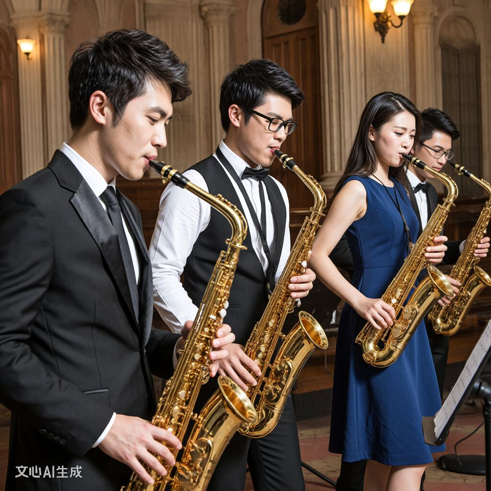

社团简介 | 活动安排 | 风采展示 | 社员故事 | 在线报名
在旋律与灵魂交织的音乐世界里，萨克斯以其兼具铜管的豪迈与木管的柔美，成为无数音乐爱好者心中的“浪漫使者”。为搭建一个汇聚热爱、传递旋律、共同成长的音乐平台，萨克斯社团于[成立年份]正式成立。自诞生以来，社团始终以“用萨克斯传递热爱，以音乐连接你我”为宗旨，致力于为每一位怀揣萨克斯梦想的成员提供专业指导、展示舞台与交流空间，如今已发展成为校内极具影响力与凝聚力的艺术社团之一，在校园文化建设中留下了无数悠扬动人的旋律印记。
无论你是零基础的新手，还是已经能熟练弹唱的老玩家， 只要对萨克斯和音乐有兴趣，都欢迎加入萨克斯社。 社团会安排老成员一对一帮带，帮助大家从指法、节奏到舞台表现逐步提高。
社团平时的活动地点主要在学生活动中心的音乐教室， 每周会安排固定的练习时间，也会根据需要加练， 为各种校园演出和比赛做好准备。
为了让大家更好地了解吉他社的日常，本学期计划安排如下几项主要活动。 具体时间可能会根据学校统一安排略作调整，详情请关注社团通知。
| 吉他社 2025 年春季学期活动安排表 | |||
|---|---|---|---|
| 活动名称 | 活动时间 | 活动地点 | 负责人 |
| 新成员见面会 | 3 月第 2 周 周五晚 | 学生活动中心 音乐教室 201 | 张强 |
| 萨克斯基础教学公开课 | 3 月第 3 周 周六下午 | 李娜 | |
| 校园草地弹唱会 | 4 月第 2 周 周日 | 操场东侧草坪 | 王浩 |
| 期末专场音乐会 | 6 月第 1 周 周六晚 | 大学生活动中心 大礼堂 | 刘芳 |
上表仅列出了部分代表性活动，日常还会有小型即兴合奏、经验分享等活动， 欢迎有想法、有创意的同学参与策划。
下面是一张往届校园音乐会的照片示意。点击图片，可以查看更详细的活动介绍页面。
图中为上学期“夏日之声”校园音乐会上，萨克斯社成员的集体演出场景。 平时的训练与排练，都会在正式演出中得到充分的展示机会。
去年招新刚结束，社团就炸了第一个 “雷”—— 我们社长林夏，当着二十多号人的面，拿着中音萨克斯吹《爱如潮水》，眼含泪光盯着副社长陈默。所有人都以为是双向奔赴，结果吹到一半，陈默手机响了，来电显示是 “女朋友”，林夏当场把萨克斯笛头摔在地上，黄铜片都磕出个小坑！后来才知道，陈默那 “女朋友” 是他亲姐假扮的，就想试探林夏是不是真喜欢他，谁知道玩脱了，俩人冷战了半个月，最后还是靠一起修那支磕坏的萨克斯和好了。现在他俩每次合奏《月亮代表我的心》，我们都在底下偷偷嗑糖，顺便提醒陈默：“下次别让你姐瞎掺和了！”
必须有！去年冬天社团办跨年音乐会，我们邀请了隔壁音乐学院的萨克斯手当嘉宾，结果来的是大三学 姐苏晓的前男友！那男生一进门，苏晓手里的萨克斯直接 “哐当” 掉地上，谱架都被带倒了。更绝的是，音乐会轮到他俩合奏《可惜没如果》，男生吹到高潮部分突然改调，吹的是他俩以前一起写的小曲子，苏晓当场红了眼，手指都在按键上抖。我们在后台急得直跺脚，生怕他俩当场吵起来，结果一曲结束，苏晓突然说：“这曲子我早忘了，以后别再吹了。” 转身就跑，男生拿着萨克斯追出去，最后在社团楼下的桂花树下聊了半小时，不知道说了啥，反正后来苏晓再提起他，就笑着说 “谢谢他让我学会把情绪吹进曲子里”。现在那首改编版《可惜没如果》，成了社团的 “禁忌曲目”，谁提谁被大家起哄！
去年春天社团组织去公园练琴，我跟社团里的学弟小宇一组，找了个没人的亭子练《小星星》。练到一半，小宇突然说要去买水，让我帮他看萨克斯。结果他刚走，就过来一个女生，拿着手机对着小宇的萨克斯拍，还问我：“这是小宇的吗？我看他朋友圈发的，就过来找他了。” 我以为是小宇的暗恋对象，赶紧帮他 “助攻”，说小宇特意选这个亭子，就是觉得风景好，适合吹曲子给喜欢的人听。女生脸一红，刚要说话，小宇拎着两瓶可乐跑回来，看见女生就愣了：“姐？你怎么来了？” 原来那是小宇亲姐，来公园散步，看见弟弟的萨克斯就过来打个招呼，结果被我硬凑成了 “暗恋剧情”！后来这事在社团传了半个月，每次练《小星星》，大家都要对着小宇喊：“要不要找个风景好的亭子，吹给你‘暗恋对象’听啊？” 小宇现在一听见《小星星》就脸红，还发誓再也不随便发朋友圈了。
如果你也喜欢音乐，期望在大学生活中拥有一段与萨克斯相关的美好回忆， 欢迎加入我们，一起演奏青春的旋律。
请认真填写以下信息，确保联系方式准确无误。 提交后，社团会通过电话或短信的方式通知面谈或试音时间。
提交表单后，如需修改信息，可以再次填写并提交最新的一份。
校园萨克斯社 · 2025 招新示例网页